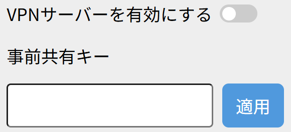
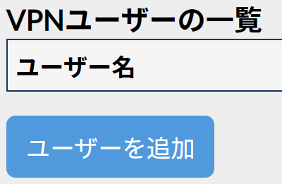
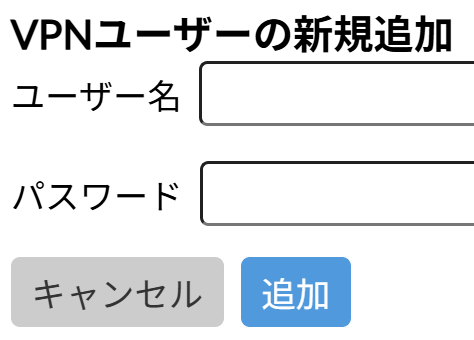

VPNサーバー
VPNサーバー機能を使用すると、外出先から自宅や社内のネットワークにアクセスできるようになります。VPNサーバーを有効にし，アカウントを作成すると、内部ネットワーク上へインターネットから直接アクセス可能になります。
これにより、ネットワーク内の機器が攻撃の対象になる可能性が高まります。攻撃者がVPN経由で侵入に成功した場合、内部ネットワーク全体が攻撃者にアクセスされる可能性があります。
セキュリティリスクを軽減するためには、事前共有鍵やアカウントのパスワードを堅牢なものに設定するなど、十分に注意と対策を行う必要があります。
設定方法
1. 本機器のWebUIを開きます。
2. 「WAN設定」-「VPN」を押します。
3. 「VPNを有効にする」を押した後、「事前共有キー」を入力して、「適用」ボタンを押します。設定した事前共有キーは、外出先から接続する際に使用します。
4. ダイアログボックスが表示された場合は、内容をよく読んでボタンを押してください。

5.「ユーザーを追加」ボタンを押します。

6. ユーザー名とパスワードを入力して、「追加」ボタンを押します。 設定したユーザー名、パスワードは外出先から接続する際に使用します。
